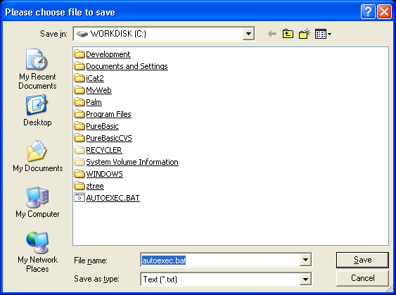

SaveFileRequester()
语法
Filename$ = SaveFileRequester(Title$, DefaultFile$, Pattern$, PatternPosition)概要
Opens the standard requester for the user to save a file.
参数
Title$ The title of the requester window. DefaultFile$ The filename to use when the requester is opened. Pattern$ A standard filter which allow to display only the files which end with such or such extension. It must be in the following form : "Text file | *.txt | Music file | *.mus;*.mod" The pattern always work by pair: name (which really appears in the filter) and extension (ie: *.txt). Several extensions can be specified for a single type by using the ; (semi-colon) separator (not supported on OSX, the requester always displays all files). PatternPosition It specifies which pattern must be the default. It begin from 0 up to the number of pattern. Once the requester has been closed, SelectedFilePattern() can be used to get back the selected pattern (not supported on OSX).
返回值
The selected filename, or an empty string if the requester has been canceled by the user.
备注
The returned 'Filename$' can be easily split into file, path and extension string with the following functions: GetFilePart(), GetPathPart() and GetExtensionPart().
示例
StandardFile$ = "C:\autoexec.bat" ; set initial file+path to display ; With next string we will set the search patterns ("|" as separator) for file displaying: ; 1st: "Text (*.txt)" as name, ".txt" and ".bat" as allowed extension ; 2nd: "PureBasic (*.pb)" as name, ".pb" as allowed extension ; 3rd: "All files (*.*) as name, "*.*" as allowed extension, valid for all files Pattern$ = "Text (*.txt)|*.txt;*.bat|PureBasic (*.pb)|*.pb|All files (*.*)|*.*" Pattern = 0 ; use the first of the three possible patterns as standard File$ = SaveFileRequester("Please choose file to save", StandardFile$, Pattern$, Pattern) If File$ MessageRequester("Information", "You have selected following file:"+Chr(10)+File$, 0) Else MessageRequester("Information", "The requester was canceled.", 0) EndIf

已支持操作系统
所有